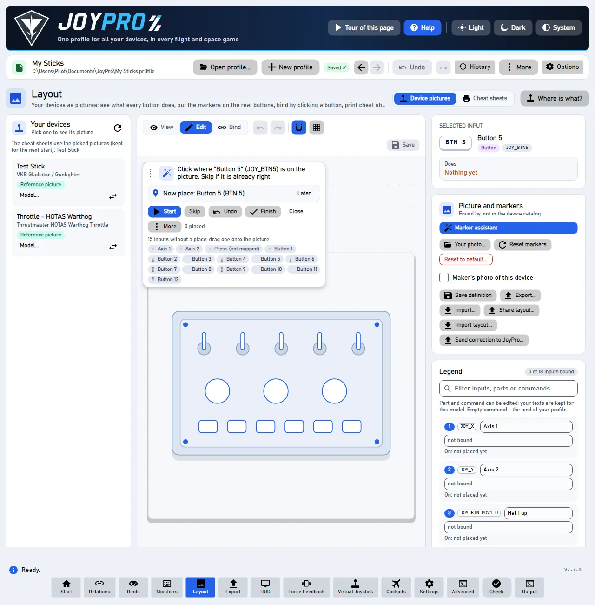

#Ovaj uređaj koristi vlastiti stil
Polje za označavanjenapisanoDaje prikazanom uređaju vlastiti stil: boje, font i oznake njegovog podsjetnika.
Čuva se uz list uređaja i putuje s Podijeli raspored....
Stranica Raspored prikazuje sliku svakog vašeg uređaja i šta radi svako dugme, Hat i osa. Ima dva odjeljka koja se prebacuju na vrhu: Slike uređaja (jedan po jedan uređaj: pregled, popravka oznaka, dodjela na slici) i Podsjetnici (slike svih vaših uređaja za štampanje, po letjelici). Ništa na ovoj stranici ne mijenja igru, osim dodjele koju napravite u načinu Dodijeli; ona ide u vaš profil kao i svaka druga dodjela.


Šta je gdje? otvara prozor sa svim vašim uređajima. Pored svake kontrole piše šta ta kontrola radi u vašoj igri. Nalazite ga gore desno na ovoj stranici, na stranici Početna i u meniju sistemske trake.
Prati igru prebacuje na igru koju igrate i, u DCS-u, na letjelicu kojom letite. Više: Šta je gdje? Pogledajte šta radi svako dugme.


JoyPro može staviti stranicu s vašim dodjelama na kneeboard svake DCS letjelice. Čitate je direktno u kokpitu.
Promijenili ste dugme? Ponovo pritisnite Stavi na kneeboard: JoyPro zamjenjuje svoje stranice. Vaše druge stranice kneeboarda ostaju. Više: Prikaži moje dodjele na DCS kneeboardu.


Slike vaših uređaja sa svakom dodjelom upisanom pored dugmadi, za štampanje ili za drugi ekran. Označite uređaje, igre i letjelice, odaberite Pregled po uređaju i/ili Jedan po letjelici, pritisnite Kreiraj podsjetnike. Slike (PNG) idu u izlazni folder; pregled ih prikazuje.


Podsjetnik prikazuje šta dugmad rade u jednoj letjelici, s nazivima komandi same igre kada je odaberete u polju pregleda. Dodjela napravljena u načinu Dodijeli zapisuje se u igru pri sljedećem izvozu, kao i dodjela snimljena na stranici Dodjele.
Traka sa slikama iznad platna ima po jedno dugme za svaku sliku uređaja. Polje pored dugmeta 3D bira stil crteža: Linije ili ravne boje ispod debelih obrisa (boje u Postavke > Crteži). Uređaji s 3D modelom dobijaju 3D prikaz: povlačenjem okrećete, točkić zumira, dvostruki klik vraća na početno. Ravni crtež je ono što podsjetnici štampaju i na čemu radi način uređivanja.
JoyPro prepoznaje uređaj prema njegovom USB id-u, imenu i ulazima koje javlja, upoređujući ih s katalogom od nekoliko stotina modela. Kada ne može odlučiti (baza s izmjenjivim drškama, jedan USB id za više proizvoda, nepoznat uređaj), pita iznad slike: Koji je to? s pločicama kandidata, Najvjerovatnije prvo, Zadrži najvjerovatnije, Nije navedeno: pretražite katalog, Ne sada. Za nepoznat uređaj birate i njegovu vrstu. Model... > Odaberi drugi model... ponovo pita u bilo kojem trenutku.
Kada prikazana slika ne zna položaj nekog dijela („Na ovoj slici još nema pozicija”), asistent za oznake ih postavi za minutu:
Ako uređaj nije pri ruci, Sada postavite: X imenuje sljedeći ulaz; klik ga stavlja tamo, Kasnije ga traži nakon ostalih, a ulazi bez mjesta su oznake koje možete prevući na sliku. Poništi vraća zadnje postavljanje; Preskoči ide na sljedeći ulaz; Zaustavi pauzira. Više sadrži Osa, Zaustavi, Dodaj kontrolu (kontrola koju JoyPro ne poznaje: dugme, prekidač, hat, mini-palica, enkoder, osa) i Ukloni sa slike.


Više > Pronađena mjesta (eksperimentalno) crta tanke isprekidane krugove na mjestima fotografije koja izgledaju kao dugmad, hatovi ili prekidači. Klik (ili ispuštena oznaka) blizu kruga stavlja oznaku u središte kruga. JoyPro ne zna koji je ulaz neko mjesto, pa sam ništa ne postavlja; radi na fotografijama, ne na JoyPro-ovim crtežima, i radi bez interneta.
Na slici s poznatim položajima Tabele (traka s alatima) crtaju izgled podsjetnika iz JoyPro 1: tabelu po grupi kontrola oko slike, linije do dijelova, dodijeljenu relaciju po redu i dodjelu s modifikatorom u drugoj koloni. Polje pregleda bira šta redovi prikazuju: Imena relacija ili jednu igru i letjelicu s vlastitim nazivima menija te igre. U načinu uređivanja povlačite tabelu (postaje prikvačena), njenu desnu ivicu, segment linije ili tačku; bočni panel ima Kolona modifikatora, Red + / Red −, Prikvačeno, Preusmjeri liniju, Ukloni liniju, Razdvoji u pojedinačne tabele, Grupiši ponovo, Automatski raspored i Vrati. Relacija povučena iz Povucite relaciju na red i ispuštena na red tamo se dodjeljuje.


Više prikaza stavlja više slika jednog uređaja na stranicu (sprijeda i sa strane, tako da je pokriveno svako dugme): Dodaj prikaz, Vaša slika..., Rasporedi, Uredi ovaj prikaz, Ukloni prikaz, Ukloni stranicu, Nazad na jednu sliku. Format stranice je A4 ili Letter za štampanje, 16:9 / 21:9 / 32:9 za ekran. Podsjetnici štampaju tu stranicu.
Kada ulaz nedostaje ili je na pogrešnom mjestu, ispravite ga u načinu uređivanja (povlačenje, Dodaj kontrolu, Ukloni sa slike, preimenovanje u legendi). Sve se čuva na ovom računaru kao vaš sloj iznad JoyPro-ovih podataka. Pošalji korekciju JoyPro-u... čuva promjenu kao malu datoteku i otvara unaprijed popunjen obrazac za prijavu problema na GitHubu; tamo odlučujete hoćete li je poslati. Model... > Vrati na zadano stanje JoyPro-a... uklanja sve vaše promjene uređaja (prvo pita; Poništi vraćanje ih vraća).
V / E / B načini, N postavlja oznaku (datoteka rasporeda), Del uklanja, Ctrl+Z / Ctrl+Y poništava i ponavlja, Ctrl+S čuva, + / - zumiranje, 0 ili F prilagođavanje, strelice pomjeraju u načinu uređivanja (Shift: 10 px), Alt povlači bez privlačenja, ispuštena datoteka slike postaje vaša fotografija uređaja.
flowchart TD D["Uređaj<br/>(USB id, ime, ulazi)"] --> I["DeviceIdentifier<br/>+ katalog uređaja"] I --> R["Referenca uređaja:<br/>model, dijelovi, slike"] R --> C["DeviceMarkerCanvas<br/>(View / Edit / Bind)"] P["Dodjele profila<br/>(binds list)"] --> C C --> B["binds set"] R --> S["List s oznakama:<br/>tabele i linije"] S --> L["layout render:<br/>PNG po uređaju<br/>i letjelici"] S --> K["layout kneeboard:<br/>DCS Kneeboard ili<br/>OpenKneeboard"]
MainWindowViewModel.LayoutWorkspace.cs (načini, poništavanje, dodjela i slobodno), LayoutReference.cs (referentna slika, čuvanje, domaćin asistenta), LayoutCallouts.cs (tabele i linije), MultiView.cs, CheatSheets.cs, ReferencePhotos.cs, Device3D.cs, DeviceIcons.cs, ModelChoice.cs, LayoutReset.cs, UnmappedPress.cs; DeviceReferenceViewModel*.cs, MarkerAssistantViewModel.cs, SheetStyleViewModel.cs. Platno: Views/Controls/DeviceMarkerCanvas.cs, CalloutSheetCanvas.cs, MultiViewCanvas.cs.<data>\DeviceReference): grips.json (odgovori o modelu), Layouts\ (vaši položaji po slici), Callouts\ (tabele i linije), MultiView\, ReferencePhotos\<model>\ (provjereno pomoću SHA-256), Corrections\, ResetBackups\; vaše definicije uređaja u <data>\Devices. Globalni stil lista u sheet-style.json.engine layout suggest (pronađi sliku za svaki uređaj, raspored na slici koju ste odabrali), engine layout render (podsjetnici), engine layout image (datoteka rasporeda koju profil koristi), engine layout template-inspect / engine layout template-save (uređivač datoteke rasporeda), engine layout callouts, engine layout multiview, engine layout titles (nazivi menija igre), engine hud devices (modeli povezanih uređaja), engine devices reference (prepoznavanje, pronađena mjesta), engine binds list.Dokumentacija funkcija iza ove stranice, generisana iz repozitorija:
152 kontrola, pročitanih iz izvornog koda programa: 152 napisano, 0 s činjenicama iz izvornog koda (opis alata, komentar u kodu, poziv engine-a), 0 još treba proširiti.
Daje prikazanom uređaju vlastiti stil: boje, font i oznake njegovog podsjetnika.
Čuva se uz list uređaja i putuje s Podijeli raspored....
Opis alata Preuzima sve boje, font i crtež predloška
Daje stilu lista svaku boju, font i crtež predloška odabranog iznad.
Uređivač i podsjetnici ga odmah koriste; odmah se čuva.
Opis alata Izbriši ovaj svoj predložak
Briše odabrani vlastiti predložak. Stil koji se koristi se ne mijenja.
Opis alata Čuva ovaj stil pod tim nazivom da biste ga kasnije ponovo primijenili
Čuva trenutni stil lista kao predložak pod imenom upisanim iznad, da ga kasnije ponovo primijenite.
Ime JoyPro predloška se odbija; vaš predložak istog imena se zamjenjuje.
Opis alata Dodaj modifikator i njegovu boju
Dodaje red za boju modifikatora. Upišite modifikator onako kako ga imenuju vaše dodjele: njegove oznake i traka iznad njegove kolone dobijaju tu boju.
Uklanja ovu boju modifikatora iz stila lista; oznake dodjela s tim modifikatorom ponovo dobijaju boju svoje vrste.
Opis alata Pritisnite dugme, pomjerite osu ili Hat: njegov red zasvijetli, a njegova funkcija se prikaže na vrhu. Čita vaše uređaje samo dok je ovaj prozor otvoren.
Prozor rasporeda, podrazumijevano uključeno: pritisnite dugme, pomjerite osu ili hat i njegov red zasvijetli; njegova funkcija je imenovana krupnim slovima na vrhu.
JoyPro čita vaše uređaje samo dok je prozor otvoren i nije minimiziran, a nakon kratkog vremena bez ulaza samo svakih 250 ms.
Opis alata Prebacuje na igru koju igrate i, u DCS-u, na letjelicu kojom letite (potreban je JoyPro DCS hook). Bez toga vaš izbor ostaje.
Prozor rasporeda: prelazi na igru koju igrate i, u DCS-u, na letjelicu kojom letite.
Bez toga vaš izbor ostaje.
Opis alata Ponovo čita dodjele (nakon što ste nešto promijenili)
Prozor rasporeda: ponovo čita dodjele, na primjer nakon što ste nešto promijenili na stranici Dodjele.
Zatvara prozor rasporeda. JoyPro pamti gdje je bio i šta je prikazivao; sljedeći put se otvara tamo.
Ako ostane otvoren kada se JoyPro zatvori, vraća se pri sljedećem pokretanju.
Opis alata Svaki uređaj s onim što svaka kontrola radi u jednoj igri i letjelici, u vlastitom prozoru (i za drugi monitor); ono što pritisnete zasvijetli
Šta je gdje? otvara prozor rasporeda: zaseban prozor sa svakim uređajem i funkcijom na svakoj kontroli za jednu igru i letjelicu.
Ono što pritisnete svijetli.
Opis alata Slika jednog uređaja: šta rade njegovi ulazi, uređivanje oznaka, dodjela na slici
Prikazuje odjeljak Slike uređaja: jedan po jedan uređaj s onim što rade njegovi ulazi, gdje uređujete oznake i dodjeljujete na slici.
Opis alata Slike vaših uređaja za štampu s onim što svako dugme radi (ne mijenja nijednu igru)
Prikazuje odjeljak Podsjetnici: slike vaših uređaja za štampanje s onim što radi svako dugme.
Njihovo pravljenje ne mijenja nijednu igru.
Opis alata Ponovo pronađi slike svojih uređaja
Pronađi moje uređaje: traži sliku svakog povezanog uređaja i navodi ih lijevo.
Opis alata Koji je model ovaj uređaj (odaberite drugi, recite da nije vaš uređaj, poništite zadnji odabir) i Vrati na zadano stanje JoyPro-a
Otvara meni modela uređaja: Odaberi drugi model..., Ovo nije moj uređaj, Poništi zadnji odabir modela, Vrati na zadano stanje JoyPro-a... i, nakon vraćanja, njegovo poništavanje.
Ponovo postavlja pitanje Koji je to? za ovaj uređaj, s kandidatima i pretragom kataloga na jedan klik.
Koristite ovo kada JoyPro prikazuje pogrešan model.
Kaže da je prikazani model pogrešan: uređaj se tretira kao nepoznat i vodi se kao svoja vrsta dok ne odaberete njegov model u pitanju iznad slike.
Vraća raniji odgovor o modelu ovog uređaja.
Opis alata Sve što ste promijenili na slici ovog uređaja nestaje: pozicije oznaka, tabele i linije, preimenovani dijelovi, vaša fotografija, vaša definicija i datoteka rasporeda koju profil koristi. Prvo pita; Poništi vraćanje vraća sve nazad.
Uklanja sve što ste promijenili na slici ovog uređaja: položaje oznaka, tabele i linije, preimenovane dijelove, vašu fotografiju, vašu vlastitu definiciju i datoteku rasporeda koju profil koristi.
Prvo pita; Poništi vraćanje sve to vraća.
"Poništi vraćanje uređaja <device>": vraća sve što je Vrati na zadano stanje JoyPro-a... uklonilo.
Otvara Zamijeni uređaj s ovim uređajem kao starim: njegove dodjele prelaze na drugi uređaj ulaz po ulaz, uz prethodni pregled.
Potreban je otvoren profil; primjena je jedna promjena u Historiji.
Opis alata Vaši JoyPro 1 rasporedi (.layout datoteke s vašim slikama): JoyPro ih kopira i prikazuje za uređaje za koje su napravljeni. Stari folder se samo čita.
Bira vaš JoyPro 1 folder: JoyPro kopira .layout datoteke s vašim slikama i prikazuje ih za uređaje za koje su napravljene.
Stari folder se samo čita.
Opis alata Otvara pretragu slika za proizvođača i model odabranog uređaja
Otvara pretragu slika za proizvođača i model odabranog uređaja u vašem pregledniku.
Sačuvajte dobru sliku, stavite je u polje ispod i pritisnite Koristi sliku.
Bira datoteku slike uređaja za Koristi sliku.
Pravi raspored na slici koju ste odabrali: engine na nju stavlja stvarnu dugmad i ose uređaja kao oznake i, uz otvoren profil, čuva je kao raspored uređaja za podsjetnike.
Opis alata Otvara folder u Exploreru (JoyPro ga kreira po potrebi)
Otvara folder za podsjetnike zajednice koje ste primili.
Datoteke slika koje tamo stavite nude se kao 2D rasporedi njihovih uređaja u traci slika.
Predloži traži i slike uređaja za koje vaš profil ima dodjele, povezanih ili ne.
Pamti se za sljedeće pokretanje.
Predloži čuva u profilu sliku koju odabere za svaki uređaj.
Pamti se za sljedeće pokretanje.
Opis alata Koristi odabrane slike za podsjetnike
Koristi datoteke rasporeda odabranih prijedloga za podsjetnike i tamo označava te uređaje.
Izbori se pamte za sljedeće pokretanje, dok se slika uređaja ne vrati na početnu ili je ne zamijeni drugi raspored.
Otvara datoteku rasporeda odabranog prijedloga u uređivaču datoteke rasporeda: učitava datoteku i prikazuje je na platnu.
Ponovo učitava datoteku iz Datoteka rasporeda u uređivač datoteke rasporeda.
Opis alata Pogled: šta radi svaki ulaz (V)
Mijenja način slike: Pregled prikazuje šta radi svaki ulaz, Uredi pomjera oznake i otvara alate za uređivanje, Dodijeli dodjeljuje relaciju kliknutom ulazu.
Postavi oznaku: sljedeći klik na sliku tamo stavlja novu oznaku, s ulazom, tipom i modifikatorima postavljenim u panelu desno.
Vraća posljednje pomjeranje ili izmjenu oznake na slici; opis alata ga imenuje.
Ponovo izvodi poništenu izmjenu oznake.
Povučene oznake se prilijepe uz druge oznake.
Držite Alt dok povlačite da jednu postavite slobodno.
Prikazuje mrežu od 10 px na slici i prilijepi povučene oznake na nju.
Pamti se za sljedeće pokretanje.
Prikazuje tabele legende i spojne linije datoteke rasporeda na slici, onako kako ih crtaju podsjetnici; uređujte ih pod Tabele, linije i stil oznaka desno.
Pamti se za sljedeće pokretanje.
Opis alata Automatski raspored: ponovo tabele i linije; prikvačene tabele (koje ste pomjerili) ostaju gdje jesu
Ponovo raspoređuje tabele i linije; zakačene tabele ostaju gdje jesu.
Ctrl+Z to vraća.
Uključeno: tabele oko slike s linijama do dijelova, kao podsjetnici JoyPro 1.
Isključeno: natpisi kod oznaka.
Više prikaza: otvara stranicu uređaja s više slika ili započinje novu s prikazanom slikom.
Slika prvo treba postavljene oznake.
Opis alata Okrećite uređaj (povlačenje; točkić zumira; dvostruki klik vraća): prikaz koji je JoyPro renderirao iz 3D modela uređaja. Isključeno: ravni crtež, koji podsjetnici štampaju i na kojem radi način Uredi.
Prikazuje JoyPro 3D prikaz uređaja: povucite da ga okrenete, točkić zumira, dvoklik vraća početni prikaz.
Isključeno: ravni crtež, koji podsjetnici štampaju i na kojem radi način Uredi.
Čuva prikazanu sliku: položaje oznaka, tabele i linije; za datoteku rasporeda upisuje datoteku.
Automatsko čuvanje ih također zadržava; Sačuvaj briše historiju poništavanja izmjena.
Preuzima svaku referentnu fotografiju koju JoyPro zna za ove povezane uređaje, u pozadini uz traku napretka; svaka se provjerava prema JoyPro zapisu.
Računa se kao vaše da za ove uređaje.
Ne sada: nijedna fotografija se ne preuzima; JoyPro ponovo pita u sljedećoj sesiji.
Opis alata Preuzimaj u pozadini referentne fotografije svakog uređaja koji se pojavi (Postavke > Privatnost)
Odmah preuzima ponuđene referentne fotografije i uključuje Automatski preuzimaj referentne fotografije: od tada se fotografije svakog uređaja koji se pojavi preuzimaju u pozadini.
Opis alata Ne preuzimaj fotografije ovih uređaja; JoyPro-ovi crteži ostaju
Kaže ne fotografijama ovih uređaja: ništa se ne preuzima i JoyPro crteži ostaju.
Postavke > Privatnost mogu ponovo pitati.
Opis alata Još jedna slika uređaja na stranici: crteži i fotografije JoyPro-a ili vaša vlastita slika
Navodi ostale slike uređaja koje još nisu na stranici; ona koju odaberete dodaje se sa svojim oznakama, tabelama i linijama.
Slika bez postavljenih oznaka ne može se dodati.
Opis alata Vaša vlastita slika kao prikaz (fotografija bočne strane, natpis; nema oznake)
Dodaje vašu vlastitu sliku na stranicu kao prikaz.
Kopira se u JoyPro folder i nema oznaka.
Opis alata Prikazi jedan pored drugog, onoliko veliki koliko stranica dozvoljava
Stavlja prikaze jedan pored drugog, onoliko velike koliko stranica dozvoljava; stranica se odmah čuva.
Opis alata Njegove oznake, tabele i linije u običnom uređivaču (stranica ih zatim prikazuje)
Otvara sliku odabranog prikaza u normalnom uređivaču da promijenite njene oznake, tabele i linije; stranica nakon toga prikazuje promjene.
Ne za vaše vlastite slike.
Uklanja odabrani prikaz sa stranice.
Opis alata Uređaj ponovo prikazuje svoju jednu sliku
Uklanja stranicu s više prikaza. Uređaj ponovo prikazuje svoju jednu sliku; oznake, tabele i linije prikaza ostaju uz svoje slike.
Opis alata Stranica ostaje (podsjetnici je štampaju); ovo ponovo prikazuje jednu sliku
Ponovo prikazuje jednu sliku. Stranica s više prikaza ostaje sačuvana i podsjetnici je i dalje štampaju.
Prikazuje ovu sliku uređaja: vaš raspored, vašu fotografiju, fotografiju proizvođača, JoyPro crtež ili 2D raspored.
Odabir referentne slike umjesto 2D rasporeda vraća uređaju njegov prethodni raspored.
Opis alata Preuzmi fotografiju proizvoda proizvođača prema kojoj je napravljen ovaj crtež (čuva se samo na ovom računaru, nikad se ne isporučuje)
Preuzima fotografiju proizvoda od proizvođača prema kojoj je ovaj crtež napravljen, čuva se samo na ovom računaru.
Bez vašeg da za ovaj model prvo pita, a preuzima nakon Da.
Odgovara na pitanje o fotografiji proizvođača: Da je preuzima i prikazuje za ovaj model, Ne zadržava JoyPro crtež, Uvijek za sve moje uređaje dozvoljava fotografije svakog uređaja, Nikad ih sve zaustavlja.
Postavke > Privatnost to vraća.
Opis alata Otvori folder sa sačuvanom fotografijom
Otvara Explorer s odabranom preuzetom referentnom fotografijom.
Opis alata Ikona uređaja na karticama uređaja, u spisku dodjela i na HUD-u: odaberite jednu od njegovih slika ili vlastitu sliku
Otvara birač ikona: jedna pločica po slici uređaja, Automatski i Vlastita slika....
Ikona se prikazuje na karticama uređaja, na listi dodjela i na HUD-u.
Opis alata Zadrži naziv u profilu
Čuva ime upisano u polje kao vaše ime za ovaj uređaj.
JoyPro ga prikazuje svuda umjesto imena uređaja; igre i dalje dobijaju stvarni uređaj.
Vraća vaše ime za ovaj uređaj: stvarno ime uređaja ponovo se prikazuje svuda.
Zatvara birač ikona; ikona ostaje kakva jeste.
Postavlja ovu sliku kao ikonu uređaja; Automatski dozvoljava JoyPro-u da ponovo bira.
Opis alata Vlastita slikovna datoteka postaje ikona (izrezana iz jednobojne pozadine i obrezana u kvadrat)
Postavlja vašu vlastitu datoteku slike kao ikonu uređaja: izrezanu iz jednobojne pozadine i kvadratno obrezanu.
Opis alata Traži ovaj ulaz nakon ostalih
Kasnije: pomoćnik za oznake traži ovaj ulaz nakon ostalih.
Opis alata Sljedeće pritisnite dugme ili smjer hat-a na uređaju
Pomoćnik za oznake čeka sljedeći pritisak: pritisnite dugme ili smjer hata na prikazanom uređaju, zatim kliknite njegovo mjesto na slici.
Nakon 30 sekundi bez pritiska zaustavlja se i to kaže.
Preskače ulaz koji pomoćnik za oznake sada traži i ide na sljedeći.
Opis alata Poništi zadnje postavljanje
Vraća posljednje postavljanje pomoćnika za oznake: dio se vraća tamo gdje je bio prije, ili među oznake ako nije imao mjesto.
Ctrl+Z na stranici radi isto.
Opis alata Sačuvaj oznake (i vašu definiciju uređaja)
Zaustavlja pomoćnika za oznake i čuva položaje oznaka prikazane slike.
Kada je uređaj bio nepoznat ili je dobio nove ulaze, čuva se i kao vaša definicija uređaja.
Zatvara pomoćnika za oznake iznad slike.
Već napravljena postavljanja ostaju kao nesačuvane promjene; Sačuvaj ih zadržava.
Opis alata Osa, Zaustavi, dodaj kontrolu koju JoyPro ne poznaje, ukloni dio sa slike
Prikazuje rijetko korištene alate pomoćnika za oznake: Osa, Zaustavi, Pronađena mjesta, Dodaj kontrolu i Ukloni sa slike.
Opis alata Sljedeće pomjerite osu uređaja
Pomoćnik za oznake čeka osu: pomjerite jednu osu uređaja do kraja, zatim kliknite njeno mjesto na slici.
Pauzira pomoćnika za oznake: prestaje čekati pritisak.
Start nastavlja, Završi čuva ono što je postavljeno.
Opis alata Prstenovi na mjestima fotografije koja izgledaju kao dugmad, hatovi ili prekidači; klik blizu prstena stavlja oznaku u njegovu sredinu. JoyPro ne zna koji je ulaz neko mjesto.
Crta isprekidane krugove na mjestima fotografije koja izgledaju kao dugmad, hatovi ili prekidači; klik blizu kruga stavlja oznaku u njegovu sredinu.
JoyPro ne zna koji je ulaz na kojem mjestu, pa sam ništa ne postavlja.
Opis alata Pritisnite (ili pomjerite) svaki ulaz kontrole na svom uređaju, zatim kliknite njegovo mjesto na slici
Dodaje kontrolu koju JoyPro ne poznaje, vrste odabrane u polju: pritisnite ili pomjerite svaki njen ulaz kako se traži, zatim kliknite njeno mjesto na slici.
Završi je čuva kao vašu definiciju uređaja.
Opis alata Ukloni odabrani dio sa slike (JoyPro ga je stavio na pogrešno mjesto)
Skida odabrani dio sa slike: tamo se više ne prikazuje.
Postavite ga ponovo sa Start ili klikom nakon što ga odaberete; Poništi ga vraća.
Preuzima 3D prikaze ovih povezanih uređaja iz izdanja JoyPro-a; 3D prikaz se tada pojavljuje na stranici Raspored i na slici stranice Dodjele.
Ne sada: 3D prikazi se ne preuzimaju; ponuda se vraća u nekoj kasnijoj sesiji.
Opis alata Preuzimaj 3D prikaze i slike kokpita iz izdanja JoyPro-a bez pitanja (Postavke > Privatnost)
Odmah preuzima ponuđene 3D prikaze i postavlja Slike iz izdanja JoyPro-a na uvijek: od tada se 3D prikazi i paketi slika stranice Kokpiti preuzimaju bez pitanja.
Opis alata Ne traži 3D prikaze i slike kokpita u izdanjima JoyPro-a (Postavke > Privatnost); ravni crtež ostaje
Postavlja Slike iz izdanja JoyPro-a na nikad: JoyPro prestaje tražiti 3D prikaze i pakete slika kokpita; ravni crtež ostaje.
Pokreće pomoćnika za oznake za ulaze koji još nemaju mjesto na slici: pritisnite svaki na uređaju, zatim kliknite njegovo mjesto.
Opis alata Sprema vaše pozicije i kontrole kao malu datoteku i otvara unaprijed popunjen obrazac za prijavu na GitHub stranici JoyPro-a; tamo odlučujete da li ćete ga poslati
Čuva vaše položaje i kontrole kao malu datoteku i otvara unaprijed popunjen obrazac za prijavu na JoyPro GitHub stranici u vašem pregledniku; tamo odlučujete hoćete li je poslati.
JoyPro sam ne šalje ništa.
Opis alata Pritisnite svako dugme uređaja i kliknite gdje je na slici; za nepoznate uređaje također imenuje dijelove
Otvara pomoćnika za oznake iznad slike: pritisnite svako dugme uređaja i kliknite gdje se nalazi.
Za nepoznate uređaje također imenuje dijelove.
Opis alata Raspored koji je neko podijelio (joypro-device-layout .json)
Uvozi položaje oznaka koje je neko podijelio: čuvaju se za svoj model i fotografiju, s tabelama i linijama, fotografijom unutar datoteke i stranicom s više prikaza kada ih datoteka ima.
Bira ovaj model kao uređaj. Slika ga odmah prikazuje, a JoyPro pamti odgovor.
Za uređaj koji JoyPro ne poznaje: kaže koja je vrsta uređaja.
"Vjerovatno" označava JoyPro pretpostavku.
Opis alata Uzmi prvo i ne pitaj ponovo
Uzima prvu pločicu kao model uređaja i više ne pita.
Otvara pretragu cijelog kataloga uređaja kada pravog modela nema među pločicama; odaberite ga iz rezultata.
Zatvara pitanje bez odgovora; vraća se kada se uređaj ponovo prikaže.
Opis alata Nova oznaka usred slike (ili uključite 'Postavi oznaku' i kliknite mjesto)
Dodaje oznaku u sredinu slike datoteke rasporeda s ulazom, vrstom i modifikatorima postavljenim ispod.
Ctrl+Z to vraća.
Kaže da je ovaj dodijeljeni ulaz pritisak hata.
Čuva se kao vaša definicija uređaja, a legenda i tabele od tada prikazuju pritisak.
Zaustavlja povezivanje pritiska hata: JoyPro prestaje čekati pritisak i red ostaje "nije povezano".
Oznaka modifikatora na oznaci datoteke rasporeda: označeno, oznaka prikazuje dodjelu dok se drži ovaj modifikator.
Opis alata Daj odabranoj oznaci ovaj ulaz, tip i modifikator
Daje odabranoj oznaci datoteke rasporeda ulaz, vrstu i modifikatore postavljene iznad.
Ulaz koji već ima druga oznaka se odbija.
Opis alata Ukloni oznaku (Del)
Uklanja odabranu oznaku iz datoteke rasporeda.
Ctrl+Z je vraća; Sačuvaj upisuje datoteku.
Bira kombinaciju modifikatora koju dobija sljedeća dodjela.
Dodijeli ovom ulazu dodjeljuje s njom, a lista prikazuje šta odgovara.
Dodjeljuje relaciju odabranu na listi odabranom ulazu, s odabranom kombinacijom modifikatora.
Prethodna relacija ulaza prvo se oslobađa; dugmad primaju relacije dugmadi, a ose relacije osa.
Opis alata Ukloni dodjelu s ovog ulaza
Uklanja dodjelu s odabranog ulaza: relacija zadržava ostale postavke, ali gubi ovaj ulaz.
Promjena ide u vaš profil i njegovu Historiju.
Opis alata Druga tekstualna kolona s dodjelom modifikatora (shift)
Prikazuje ili skriva drugu kolonu odabrane tabele s dodjelom uz modifikator.
Ctrl+Z to vraća.
Opis alata Osa dobija red zone (0-20 %, 20-40 % ...); ostale tabele opet prikazuju skriveni red
Tabela ose dobija još jedan red zone; ostale tabele prikazuju red koji je ranije bio skriven.
Opis alata Uklanja zadnji red zone ose ili sakriva zadnji red
Uklanja posljednji red zone tabele ose ili skriva posljednji red druge tabele.
Opis alata Prikvačena tabela ostaje gdje jest kad se tabele ponovo rasporede
Zakači odabranu tabelu: zakačena tabela ostaje gdje jeste kada se tabele ponovo raspoređuju.
Pomjeranje tabele je kači.
Opis alata Nova linija od tačke do tabele (vraća i uklonjenu liniju)
Crta novu liniju od mjesta odabrane tabele do tabele, bez vaših pregiba; vraća i uklonjenu liniju.
Opis alata Uklanja liniju tabele (Del)
Uklanja odabranu liniju ili liniju odabrane tabele.
Povucite od okrugle ručke tabele do nekog mjesta da je dodate, ili koristite Preusmjeri liniju.
Opis alata Mreža tastera (ili tabela dijelova na jednoj tački) postaje jedna tabela po dijelu, svaka sa svojom linijom
Pretvara odabranu mrežu tipki u jednu tabelu po dijelu, svaku s vlastitom linijom.
Grupiši ponovo to poništava.
Opis alata Tasteri i dijelovi na jednoj tački opet dijele svoje tabele (poništava svako Razdvajanje)
Tipke i dijelovi na jednom mjestu ponovo dijele svoje tabele: poništava svako Razdvoji u pojedinačne tabele.
Opis alata Opet JoyPro raspored: i prikvačenja, širine, redovi i savijene linije (Poništi vraća vaše)
Vraća JoyPro raspored tabela i linija, i zakačke, širine, redove i savijene linije; izbor kombinacija modifikatora i stil lista ostaju.
Ctrl+Z vraća vaš.
Opis alata Koristite vlastitu fotografiju uređaja (ili ispustite datoteku slike na sliku)
Bira vašu vlastitu fotografiju ovog uređaja: JoyPro je kopira u svoj folder i prikazuje.
Postavite njene oznake pomoću pomoćnika za oznake.
Uklanja vašu vlastitu fotografiju ovog modela; slika se vraća na fotografiju proizvođača ili JoyPro crtež.
Vaši položaji oznaka na drugim slikama ostaju.
Opis alata Uklanja vaše pozicije oznaka na ovoj slici: vraćaju se JoyPro-ove vlastite pozicije (fotografija za koju JoyPro nema pozicije tada je bez oznaka)
Uklanja vaše položaje oznaka na prikazanoj slici: JoyPro vlastiti položaji ponovo se prikazuju tamo gdje ih ima, a inače oznake nestaju dok se ponovo ne postave.
Ctrl+Z vraća vaše dok ne sačuvate.
Opis alata Preuzmi fotografiju proizvoda proizvođača ovog uređaja sa njegove web stranice i prikaži je (čuva se samo na ovom računaru, nikad se ne isporučuje). Isključeno: JoyPro crtež. Postavke > Privatnost: pitaj, uvijek ili nikad za sve uređaje.
Vaš odgovor za fotografiju proizvođača ovog modela: označeno, JoyPro preuzima fotografiju proizvoda sa stranice proizvođača i prikazuje je; neoznačeno, prikazuje se JoyPro crtež.
Postavke > Privatnost postavljaju pitaj, uvijek ili nikad za sve uređaje.
Opis alata Zadrži ovaj uređaj (imena, novi ulazi, oznake na crtežu) kao vašu definiciju uređaja
Čuva prikazani uređaj kao vašu vlastitu definiciju uređaja: imena koja ste dali dijelovima, ulaze koje ste dodali i oznake na JoyPro crtežu.
JoyPro je od tada koristi za ovaj uređaj.
Opis alata Sačuvaj ovaj uređaj kao datoteku definicije (JSON) za dijeljenje
Čuva prikazani uređaj kao datoteku definicije za dijeljenje ili slanje JoyPro-u: njegove dijelove s vašim imenima, nove ulaze i položaje oznaka na crtežu.
Opis alata Dodaj datoteku definicije uređaja (JSON)
Dodaje uređaje iz datoteke definicije vašim definicijama uređaja i prikazuje prvi.
Datoteka koja nije definicija odbija se uz poruku.
Opis alata Sačuvaj pozicije oznaka prikazane slike za dijeljenje (fotografija proizvođača ide samo preko adrese; vaša vlastita fotografija ide unutra)
Čuva položaje oznaka prikazane slike kao datoteku za dijeljenje, s njenim tabelama i linijama i stranicom s više prikaza.
Fotografija proizvođača ide samo kao adresa; vaša vlastita fotografija ide unutar datoteke.
Nova ili odabrana tabela datoteke rasporeda dobija sjenu na podsjetniku.
Dodaje tabelu legende u datoteku rasporeda s imenom, vrstom, veličinom i bojom pozadine iznad.
Prikazuje se na slici kada je uključeno Tabele i linije, gdje je možete povući.
Daje odabranoj tabeli vrijednosti iznad.
Uklanja odabranu tabelu iz datoteke rasporeda.
Uključeno: sljedeći klik na sliku tamo stavlja tabelu.
Uključeno: sljedeći klik na sliku postavlja početak spojne linije.
Uključeno: svaki klik na sliku dodaje ugao liniji, pa može ići oko drugih dijelova.
Zaboravlja odabranu početnu tačku nove spojne linije.
Dodaje spojnu liniju od odabranog početka do oznake izabranog ulaza, s imenom, bojom, širinom, putanjom i tačkama uglova iznad.
Daje odabranoj spojnoj liniji vrijednosti iznad.
Uklanja odabranu spojnu liniju iz datoteke rasporeda.
Označava svaki uređaj za podsjetnike.
Uklanja oznaku sa svakog uređaja; kada nijedan nije označen, svaki uređaj sa slikom dobija list.
Pravi pregledni list po uređaju s relacijama koje su na njemu dodijeljene.
Pravi jedan list po uređaju i letjelici, s dodjelama te letjelice.
Izostavlja uređaje bez slike, i označene, i pravi listove ostalih.
Isključeno: označeni uređaj bez slike zaustavlja izvoz uz napomenu.
Opis alata Također stranica po letjelici (i za pregled) s podsjetnicima svih uređaja jedan ispod drugog: All devices.png
Pravi i stranicu po letjelici s listovima svih uređaja jedan ispod drugog: All devices.png.
Označava svaku igru profila za listove po letjelici.
Uklanja oznaku sa svake igre.
Označava svaku letjelicu označenih igara.
Uklanja oznaku sa svake letjelice; kada nijedna nije označena, sve letjelice igara dobijaju list.
Crta oznake na listovima datoteka rasporeda.
Dodaje tabelu legende na listove datoteka rasporeda, s veličinom i redovima postavljenim ispod.
Bira folder u koji se upisuju podsjetnici.
Otvara izlazni folder podsjetnika u Exploreru.
Stavlja stranice na DCS kneeboard: folder Kneeboard vašeg DCS Saved Games foldera i DCS.openbeta foldera pored njega, u folder koji DCS koristi za svaku letjelicu.
Umjesto toga upisuje stranice u folder koji odaberete, jedan podfolder po igri i letjelici, u vlastitom obliku lista.
Usmjerite na njega OpenKneeboard Folder karticu, ili bilo koji drugi kneeboard alat ili igru koja prikazuje folder slika.
Bira folder za stranice kneeboarda.
Opis alata Isključeno: samo letjelice označene iznad.
Uključeno: svaka letjelica u kojoj vaši uređaji imaju dodjele dobija svoje stranice.
Isključeno: samo letjelice označene iznad za podsjetnike.
Stranice letjelice navode sve uređaje, svaki uređaj kao odjeljak, umjesto stranica po uređaju.
Završetak imena i visina stranice čuvaju se s ostalim opcijama.
Opis alata Isključeno: slika podsjetnika, kao na stranici Raspored.
Uključeno: svaka stranica navodi samo kontrole koje nešto rade u ovoj letjelici, krupnim tekstom, grupisane po kontroli, s obojenom oznakom na dodjelama kojima treba modifikator.
Uređaj s mnogo dodjela nastavlja se na drugoj stranici.
Prikazuje sliku uređaja na vrhu stranice s listom, s brojem na svakoj kontroli koji odgovara listi.
Isključeno: bez slike, više prostora za listu.
Stavi na kneeboard stavlja podsjetnik svake letjelice na njen kneeboard: jedna stranica po letjelici i uređaju, nacrtana kao podsjetnici s označenim uređajima i stilom lista.
U DCS-u stranice nalazite na kneeboardu te letjelice u kokpitu.
Prikazuje najnovije slike iz izlaznog foldera u pregledu, i one iz ranijih sesija.
Opis alata Pravi slike (PNG) u izlaznom folderu. Igre se ne diraju.
Pravi podsjetnike u izlaznom folderu s označenim uređajima, igrama, letjelicama i stilom lista te ih prikazuje u pregledu.
Nesačuvane izmjene datoteke rasporeda prvo se čuvaju; označeni uređaj bez slike ga zaustavlja uz poruku.
Otvara ovaj podsjetnik u vašem pregledniku slika, da ga pogledate u punoj veličini ili odštampate.